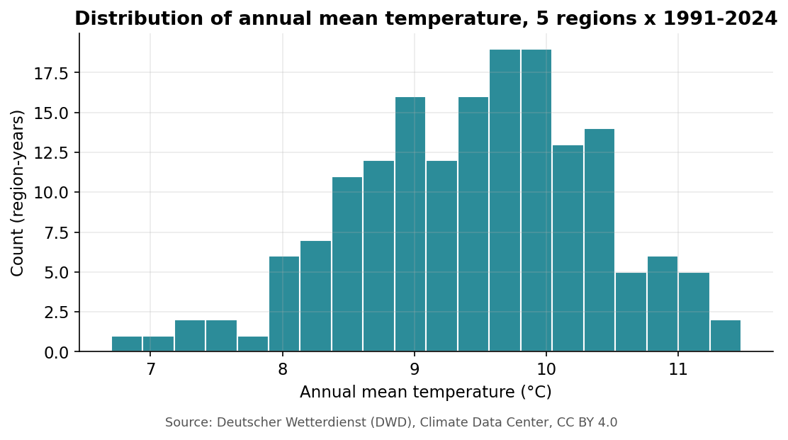
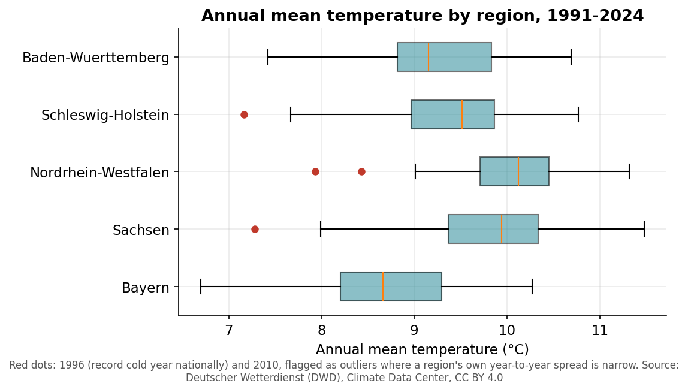
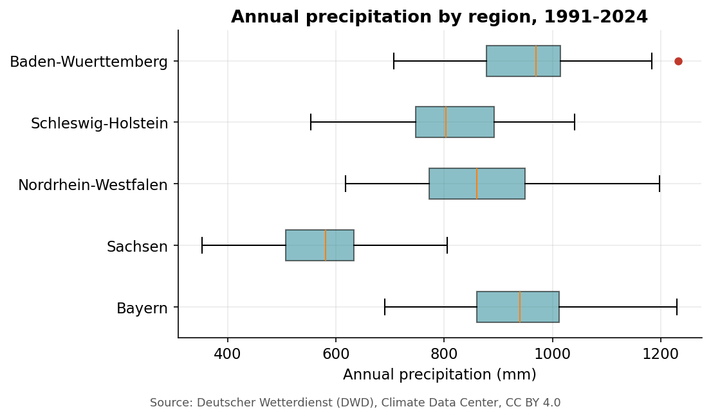
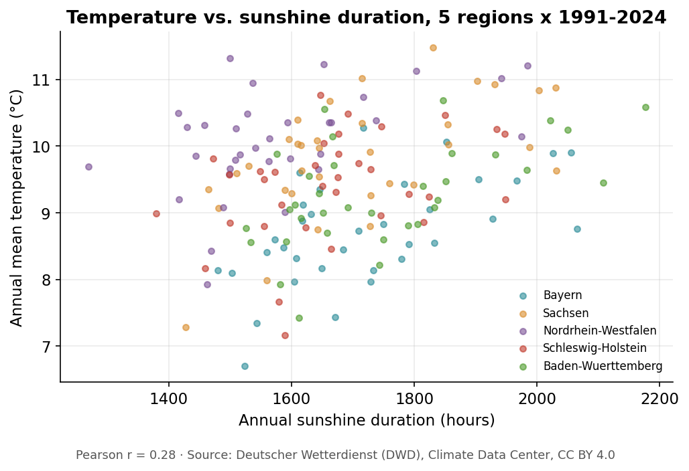
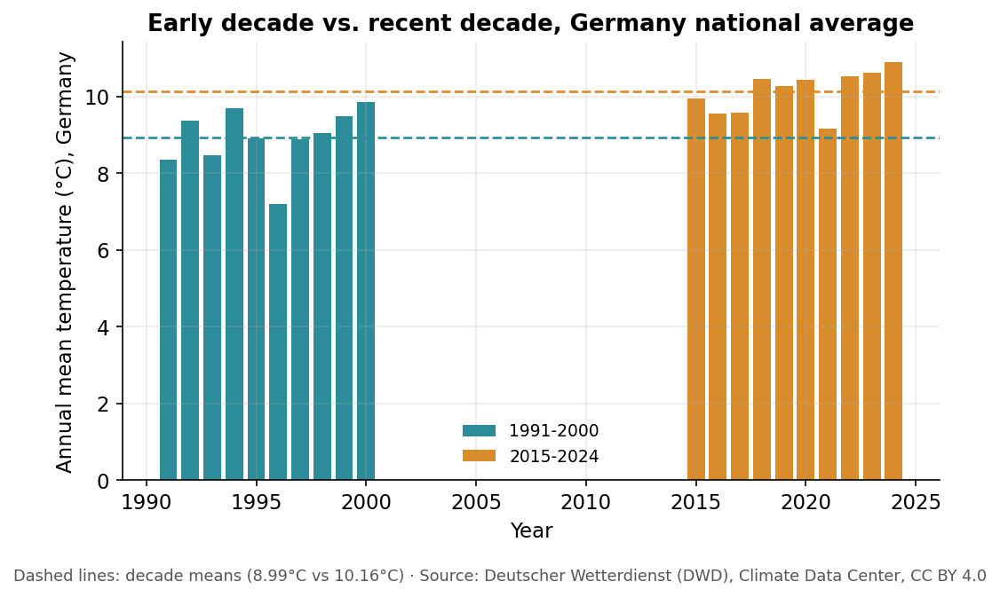
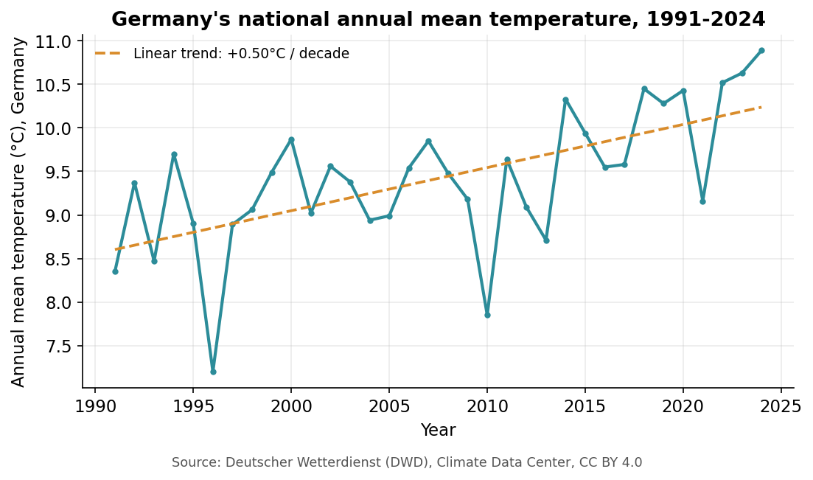
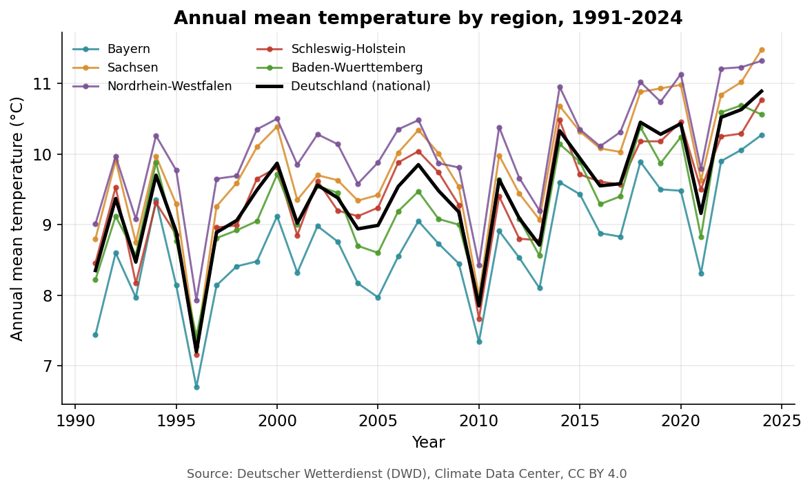

2 Exploring and Visualising Data
Guiding question: What patterns can I discover in the data?
In this area you will learn how to: explore datasets, recognise distributions and outliers, identify patterns and relationships, select appropriate visualisations and create graphs using R and ggplot2. (Source materials: DataCamp “Data Analyst with R” track, r4ds.hadley.nz — see Resources.)
From here on we use the cleaned version, data/clean/dwd_climate_clean.csv, so that exploration is not blocked by the raw-data problems you already tackled in Chapter 1. It is real DWD data — see data/README.md for the exact source and license (CC BY 4.0). This chapter follows one variable — annual mean temperature — all the way through, since that is the one this whole module ultimately asks you to relate across time. Precipitation makes one short guest appearance later on, purely to show that the same outlier-detection method applies to any variable, not just this one.
library(tidyverse)
climate <- read_csv("data/clean/dwd_climate_clean.csv")
states <- climate %>% filter(Region != "Deutschland")
de <- climate %>% filter(Region == "Deutschland")Code walkthrough
states— the 5 regions, excluding the national series.de— the national series alone ("Deutschland"= Germany).
Reading the pipe (%>%). You will see %>% constantly from here on — it means “take what’s on the left, and feed it into the next step.” Think of it as a conveyor belt: climate %>% filter(...) takes climate, sends it down the belt into filter(), and whatever comes out the other end gets stored in states. Read a pipeline top to bottom, one step at a time, rather than trying to hold the whole line in your head at once — each %>% is just “…and then…”.
2.1 Exploratory Data Analysis
Before plotting anything, understand the fundamental characteristics of what you downloaded. The dplyr package is the most fundamental tool for exploring and manipulating data — EDA is like a handshake between you and the data before you start drawing conclusions from it.
- Dimensions.
dim()gives the shape of the data matrix: how many observations and variables. - Structure.
str()orglimpse()shows the internal blueprint — the type of every column. - Slicing and filtering.
select()isolates specific columns,filter()extracts specific rows. - Summarising.
summary()prints a quick six-number overview of a numeric column (minimum, the two middle quartiles, mean, maximum) — a fast way to notice something unusual before you have drawn a single plot.
Exercise 2.1 — A first handshake
dim(states)
glimpse(states)
states %>% filter(Region == "Sachsen", Year == 2003) %>%
select(Region, Year, Temperature_C, Precipitation_mm, Sunshine_hours)Code walkthrough
dim(states)— rows × columns: how many observations, how many variables.glimpse(states)— every column’s name, type and first few values, at a glance.filter(Region == "Sachsen", Year == 2003)— keeps only the row(s) matching both conditions (a comma insidefilter()means “and”).select(...)— keeps only the listed columns and drops the rest.
Q1. How many regions and how many years does each one contribute? (Hint: count(states, Region).) Does every region have the same number of rows?
Q2. Compute summary() on Temperature_C for one region, then for another. What is your first impression, before any plot?
2.2 Distributions
A distribution describes how often different values occur in a dataset. Across 34 years and 5 regions, the distribution of annual temperature tells you the spread, frequency and pattern of German climate — it answers “how much does this variable actually vary, year to year and place to place?”
Three ideas to hold onto:
- Central tendency — the middle of your data. The mean is the arithmetic average, sensitive to extreme years. The median is the physical middle value when sorted, telling you what a typical year looks like without being pulled by a single extreme one.
- Spread and variance — how tightly or loosely the data hugs the centre. A region with low year-to-year variance has a stable climate; high variance suggests larger swings between mild and extreme years.
- Skewness. Not every variable is a symmetric bell curve — some have a longer tail stretching out on one side. Analogy: think of a class’s exam scores. If most students do well but a handful fail badly, those low scores drag a long tail out to the left (left-skewed, or negative skew). If most score low but a few ace it, the tail stretches to the right instead (right-skewed, positive skew). You will check whether temperature leans either way in Exercise 2.2.
Exercise 2.2 — Describe a distribution
ggplot(states, aes(x = Temperature_C)) +
geom_histogram(binwidth = 0.5) +
labs(title = "Distribution of annual mean temperature, 5 regions x 1991-2024",
x = "Temperature (°C)", y = "Count")Code walkthrough
binwidth = 0.5— width of each histogram bar, in °C. Try 0.2 or 1 to see how the shape of the histogram changes.
Q3. Is the temperature distribution roughly symmetric, or does it have a longer tail on one side? Compare mean() and median() — are they close together, or noticeably different?

2.3 Outliers
An outlier is an observation that lies an abnormal distance from the other values in a sample. In a real climate dataset, that is a year that stands out sharply from a region’s normal range — and, unlike a sensor malfunction, a real climate outlier is usually a genuine, well-documented event.
Detecting outliers. Mathematically isolate them using the interquartile range (IQR) on a boxplot: any point more than 1.5 × IQR past the upper or lower quartile is flagged. Analogy: the IQR is the “normal middle 50%” of your data — like the middle half of runners in a race, once you ignore the fastest and slowest quarter. A boxplot draws that middle 50% as a box; a point that lands far outside it (more than 1.5 times the box’s own width past either edge) gets flagged as a dot on its own.
Classifying outliers. Real environmental data mostly gives you one kind:
- Genuine environmental extremes. Real events that are scientifically meaningful, not measurement problems — cold snaps, heatwaves, exceptionally wet or dry years. You must never delete these; they are often exactly what you are trying to study.
- Sensor or reporting errors. You already met this kind in Chapter 1 (the unit-suffix strings, the duplicated rows) — but notice that once cleaned, this real dataset does not contain any impossible physical values. That is worth stating explicitly, not assuming.
Exercise 2.3 — Find and classify an outlier
ggplot(states, aes(x = Region, y = Temperature_C)) +
geom_boxplot() +
coord_flip()Code walkthrough
geom_boxplot()— draws the box (the IQR), the whiskers, and any flagged outlier points, one box per region.coord_flip()— turns the whole chart on its side, so the region names are easy to read instead of squeezed along the bottom.
Q4. Look at the red-flagged points on the boxplot below. Which year do nearly all of them share? Is that year flagged as an outlier in every region, or only in some — and what does that tell you about how “outlier” depends on a region’s own year-to-year spread, not just on the raw value?
Q5. 1996 turns out to be Germany’s coldest year on record in this 34-year dataset (national annual mean 7.2°C, against a 34-year average of about 9.4°C). Why would deleting this year before computing “typical German temperature” be a mistake?

A Quick Look at a Second Variable
Outlier detection is not unique to temperature — the same method applies to any numeric column. Running it on Precipitation_mm turns up a different, equally real story:
ggplot(states, aes(x = Region, y = Precipitation_mm)) +
geom_boxplot() +
coord_flip()(Same two functions as the boxplot above — see the code walkthrough in Exercise 2.3 if you need a refresher.)
Only one region-year clears the 1.5×IQR threshold: Baden-Württemberg, 2002, at 1231.6mm — more than 200mm above that region’s own upper quartile. 2002 was the year of the catastrophic Elbe and Danube flooding across Central Europe, a real, independently documented event — exactly the kind of outlier you must keep, not delete.

Two other years are worth knowing by name if you explore this dataset further: 2003 and 2018 are the two driest years nationally in the full 1991–2024 record (608mm and 586mm, against a 34-year average of roughly 800mm) — both real, widely documented German drought years. Checking the temperature record, though, only 2018 was also unusually warm nationally; 2003’s famous summer heatwave does not stand out in the annual mean the way it does in that summer’s own monthly figures. That is a useful reminder on its own: an annual average can hide a dramatic season, so always ask what time window a number was aggregated over before you trust a claim built on it.
2.4 Data Visualisation — the Grammar of Graphics
ggplot2 treats visualisation like building the layers of a map — reading a plot is like reading a paragraph: data layer → aesthetics layer → geometric layer → facet layer → themes and labels.
- The canvas (
ggplot()). Initialises the plot and links it to your data frame. - Aesthetics (
aes()). Maps variables to physical dimensions: what goes on the x-axis, the y-axis and whether a variable controls colour, shape or size. - Geometries (
geom_*). The actual visual marks:geom_point()for scatterplots,geom_line()for time series,geom_boxplot()for spotting outliers.
Identifying relationships. To see whether two variables are physically linked, look at their joint pattern on a scatterplot:
- Positive correlation — points trend upward left-to-right.
- Negative correlation — the trend slopes downward.
Recognising hidden patterns via faceting. With five regions over 34 years, plotting everything on one chart can create an unreadable blob (“overplotting”). facet_wrap() or facet_grid() split your data into a grid of small, clean subplots by a categorical variable — e.g. a separate mini-timeline per region — letting you compare patterns across space and time without the signal drowning in noise. Chapter 4 picks sunshine duration back up as one explanation for temperature, so it is worth meeting the relationship visually first.
Exercise 2.4 — Beginner: write the syntax
ggplot(states, aes(x = Sunshine_hours, y = Temperature_C, colour = Region)) +
geom_point(alpha = 0.6) +
labs(title = "Temperature vs. sunshine duration", x = "Sunshine duration (hours)",
y = "Temperature (°C)")Code walkthrough
alpha = 0.6— point transparency, from 0 (invisible) to 1 (fully solid). A lower value makes overlapping points easier to see, since darker areas mean more points are stacked on top of each other.
Q6. Add facet_wrap(~Region) to the plot above. What changes about what you can now see?
Exercise 2.4 — Intermediate: interpret the result
Q7. Using the faceted plot, does the temperature–sunshine relationship look the same across all five regions? Would you call it a strong or a weak relationship?

2.5 Comparing Two Points in Time
The simplest way to ask “has it gotten warmer?” is to compare exactly two numbers: the temperature in one year against the temperature in another. Germany’s national annual mean temperature was 8.35°C in 1991 and 10.89°C in 2024, a difference of +2.54°C across the 34-year record.
Exercise 2.5 — Two years, then a more robust comparison
Q8. A single year can be unusually warm or cold on its own (recall 1996 from Exercise 2.3). Does resting a claim like “Germany has warmed” on just two single years, 1991 and 2024, worry you? Why or why not?
To guard against exactly that risk, average across a full decade on each side instead of trusting one single year:
de %>%
filter(Year <= 2000 | Year >= 2015) %>%
mutate(Period = if_else(Year <= 2000, "1991-2000", "2015-2024")) %>%
group_by(Period) %>%
summarise(mean_temp = mean(Temperature_C))Code walkthrough
filter(Year <= 2000 | Year >= 2015)— keep only rows from the two decades we’re comparing (|means “or”).mutate(Period = if_else(...))—mutate()adds a new column;if_else()fills each row of it with a yes/no test: “is this row’sYear <= 2000?” → label it “1991-2000”, otherwise “2015-2024”.group_by(Period)— split the rows into two groups, one perPeriodlabel.summarise(mean_temp = mean(Temperature_C))— collapse each group down to a single number: its own mean.
Q9. Compare the two ten-year windows: 1991–2000 against 2015–2024. Roughly how many degrees warmer does the recent decade look? Keep this number in mind — Chapter 3 asks whether a gap this size is one you can trust as more than random year-to-year noise, or whether it could be chance.

If a plot looks “off” (empty, all one colour, points stacked in a corner), ask your learning buddy to help you debug the aes() mapping rather than asking it to just “make the plot” for you — you will need that debugging skill for your own challenge dataset, which won’t come with a working example to copy.
If ggplot() still feels like memorising magic incantations rather than composing layers: swirl runs short interactive R exercises directly in your own console, including a “Data Visualization” module built for exactly this stage.
Exercise 2.5 compares just two snapshots. If you are curious whether the warming shows up gradually across the whole 34-year record and whether every individual region warms at the same pace or one stands out, here is the full picture: the national average year by year, then the same data broken down by region.


If the Grammar of Graphics idea clicked and you want the complete system behind it: ggplot2: Elegant Graphics for Data Analysis (free online) is the authoritative deep dive, written by the package’s own author.
R for Data Science (r4ds) · DataCamp — Data Analyst with R · Data Visualization: A Practical Introduction · Fundamentals of Data Visualization. Full list with descriptions: Resources.
2.6 Check your understanding
- Can you explain, to someone who has never seen
ggplot2, what each layer (data → aes → geom → facet) contributes? - Given a new numeric variable, could you describe its distribution in words (centre, spread, skew) from a histogram alone?
- Can you distinguish a genuine environmental extreme from a data-quality problem and say what should happen to each?
Continue to Chapter 3, Statistical Inference.